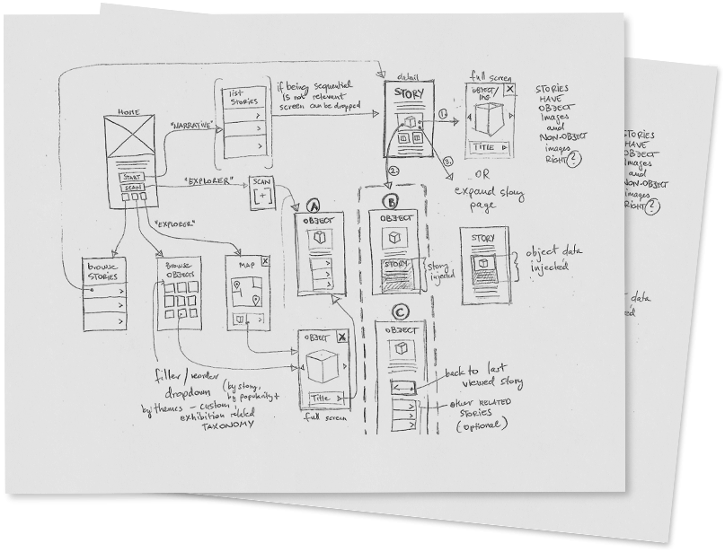

<!DOCTYPE html>
<html lang="en">
<head>
    <meta charset="UTF-8">
    <meta http-equiv="X-UA-Compatible" content="IE=edge">
    <meta name="viewport" content="width=device-width, initial-scale=1.0">
    <script src="https://kit.fontawesome.com/2463c70382.js" crossorigin="anonymous"></script>
    <link href="style.css" rel="stylesheet" />
    <title>Site Freelancer</title>

<head>
</body>   


<section class="main">
    <div class="center menu-container">
        <div class="logo">
            
        </div>

        <div class="menu">
            <a href="#">Sobre mim</a>
            <a href="#">Perguntas Frequentes</a>
            <a href="#">Blogue</a>
            <a href="#">Fale Comigo</a>
        </div>

    </div>
</section>
</br></br>
</br></br>

<section class="content-main">
    <div class="center">
        <div class="content-chamada">
            <h2>Modelo do Freelancer</h2>
            <h3>O Freelancer CMS é a ferramenta perfeita para o Criativo Independente que quer se destacar com um modelo ousado, bonito e fácil de usar.</h3>
            <a href="#">Sobre mim</a>
        </div>
        <div class="img-content">
            
            
            
        </div>
    </div>
<div class="center">
    <div class="form">
        <form>
            <input type="text" />
            <input type="text" />
            <input type="submit" />
        </form>
    </div>
</div>
</section>

<section style="min-height: 600px; background-color:white;" class="restante"></section>

</body>
</html>